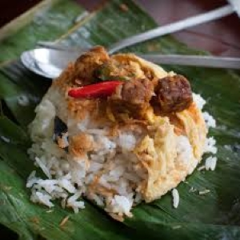
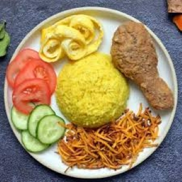
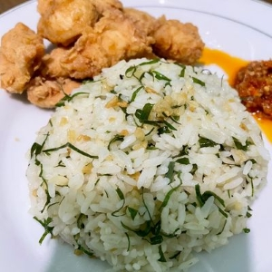

Nasi uduk or coconut rice
Nasi uduk is an Indonesian style steamed rice cooked in coconut milk dish, especially popular in Betawi and Javanese culinary traditions.

Nasi kuning or tumeric rice
Nasi kuning sometimes called nasi kunyitis an Indonesian fragrant rice dish cooked with coconut milk and turmeric hence the name nasi kuning.

Nasi daun Jeruk or Lime Leaf rice
Nasi daun jeruk is an Indonesian fragrant rice dish cooked with finely chopped kaffir lime leaves (daun jeruk), resulting in an aromatic, herbaceous flavor.